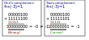
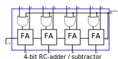

Extending the binary system
While in the previous blog post about addition, the binary numbers had only one interpretation, we extend the system here to include negative (integer) numbers.
The simplest approach we can think of is to use the most significant bit (MSB) as sign bit, where '0' ist intepreted as sign '+' and '1' is interpreted as '-'. However as we see in the following calculation this does not work as expected:
One complement
As the previous approach does not fullfill the requirements let us introduce the one complement and two complement here. The one complement is just an inversion of every bit, independent from its significance.
\[ \begin{array}{l} 00000011_{2} = +3_{10} \\ 11111100_{2} = -3_{10} \end{array} \]
Two complement
However,as can be seen in the panel below, there is still a mismatch on addition. So, as a second step the inverted number is incremented by one. This leads us to the so-called two’s complement as seen below.
\[ \begin{array}{l} 00000011_{2} = +3_{10} \\ 11111101_{2} = -3_{10} \end{array} \]
As can be seen in the following calculations, with the two’s complement we get the correct results. 
Overflow
As can be seen, in both cases, for one- and two-complement an arithmetic overflow is produced. It is very dependent on the cpu achitecture how those are handled, but in every case you get the information as a flag (v) .
Implementation of subtraction in a fulladder
To extend the full-adder with the logic for subtraction we do not need to design from scratch all again. The properties of the xor-gate allows the first step of the two’s complement, the inversion of every bit, while for the second step the increment, we simply use '1' of the subtraction switch as carry-input for the first full-adder stage.

Overview table for the number range -7..+7
decimal |
binary |
one complement |
two complement |
+7 |
0111 |
0111 |
0111 |
+6 |
0110 |
0110 |
0110 |
+5 |
0101 |
0101 |
0101 |
+4 |
0100 |
0100 |
0100 |
+3 |
0011 |
0011 |
0011 |
+2 |
0010 |
0010 |
0010 |
+1 |
0001 |
0001 |
0001 |
+0 |
0000 |
0000 |
0000 |
-0 |
1000 |
1111 |
- |
-1 |
1001 |
1110 |
1111 |
-2 |
1010 |
1101 |
1110 |
-3 |
1011 |
1100 |
1101 |
-4 |
1100 |
1011 |
1100 |
-5 |
1101 |
1010 |
1011 |
-6 |
1110 |
1001 |
1010 |
-7 |
1111 |
1000 |
1001 |